Sculpting skill pass: better faces
November 9, 2026. Branch sculptor-skill. Two passes on the bust after Sprint 5, plus a model comparison on the result. Every run id on this page opens in the app as /?replay=<run-id>. Images are rendered from the strike logs at the same camera for every run: a 44 cm front close-up and a 44 cm left close-up centred on the head, and the four three-quarter views.
Diagnosis
The study's busts failed in the face, and the reason was in the tools, not the reference. A form could hold at most twelve convex solids with one blend, so a head was an egg with a nose glued on, and every feature beyond that had to be found by chiselling a 40 cm face from a contact sheet in which it was a few dozen pixels across. The reference sheets were, on inspection, perfectly sculptable busts (below, left): the model simply had no way to carry their interior relief into the stone, since the sheet only ever became two silhouettes.
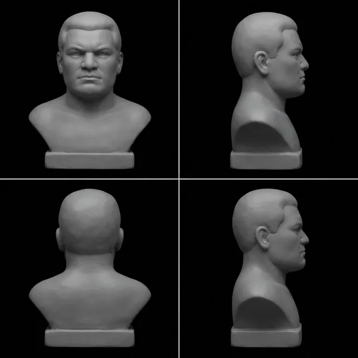
A bald mannequin bust, frontal, smooth. Carvable, but it says nothing a silhouette can carry about the eyes, nose or mouth.
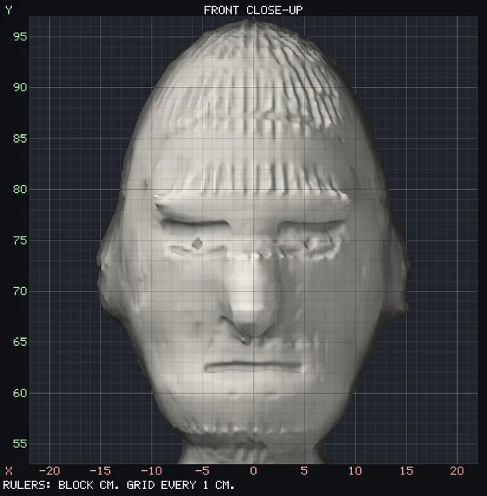
Egg head, pencil neck, features as notches. Kyle's words: "like a little kid sculpted it".
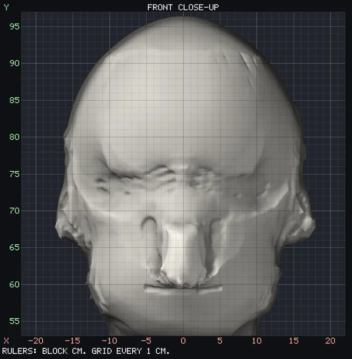
GPT-6 Sol, 59 turns. A head shape with a brow and a mouth line, no eyes, no nose to speak of.
Three things were missing, in order of weight. A relief target: something for the face that has sockets, a nose with a bridge and wings, lips and a jaw in it, not an outline. A finishing pass that takes the stone exactly onto that target, since the roughing-out's last layer leaves 0.3 to 0.6 cm of claw noise, which is the whole depth of a lip. And a detail mode: a way to pick one feature, see it at a magnification where a centimetre is tens of pixels, work it with small tools inside that window only, and step back.
What changed
- A head canon (
shared/sculpt/anatomy.ts).declare_formtakeskind: head: the model places, sizes (temple to temple, chin to crown, brow to occiput) and poses it (tilt, turn, cock), and it expands to 27 kernel primitives built the way a clay head is built up: cranium, frontal bone, two brow ridges, one face mass whose receding sides are the socket floors, cheekbones, eyes set back under the brow, a cone for the bridge of the nose with a tip and two wings, a muzzle, two lips, chin, jaw, ears. Sockets, the hollow beside the nose and the line of the mouth are the gaps between masses, so the form stays a plain smooth union and the log never holds a kind the kernel does not know:KERNEL_VERSIONis still 2 and every old log replays. The canon was tuned offline at zero model spend (five iterations, first and last below). Shapes per form went from 12 to 24; hair, beard, a heavier nose are the model's own shapes on top. detail: a windowed finishing pass (windowoption onroughOutinhand.ts). In a square window of a view, every surface facing that view is cut back to the form with the flat chisel at a 0.1 cm margin, with the kernel's clipping doing the last tenth, so the face that stands there is the form itself. No saw, nothing outside the window moves. The face in every run on this page was finished by it.- Detail mode:
focus/unfocus. The sculptor picks a window (6 to 30 cm) in one view and gets it enlarged at once, with the stone's relief read off along the window's two centre lines in numbers (nine samples each). Until it unfocuses, everylookis that window; chisel, drill, rasp and polish must be from that view, inside the window and no wider than a fifth of it;rough_outandsaware refused. The HUD's eye shows the window and the camera takes a macro shot of it (Macroon the camera rig, carried on the timeline look). The region sub-loop is the natural unit for a parallel worker later (one on the face, one on the shoulders); nothing parallel was built. - Guards that earlier runs showed were needed: the rasp protects the form last cut to, so smoothing cannot take a declared nose down; and
rough_outordetailto a second form while the figure is another is refused, because a pass protects one form and a "torso" declared on its own took a head off (run skill-2 below). - Prompt: how to place and dress a head, the measure of a bust in this block in centimetres (base 6, pit of the neck at 46, shoulders 51 to 57 wide, neck 10 to 14 whose front stays behind the chin, head 38 to 42, crown 3 to 5 under the top, no socle), compose as a sculpture not a mannequin, what the grid can resolve (0.4 cm cells; nothing under a centimetre reads; a feature is 2 cm or more or it stays in the form), finish with
detail, fine strokes only in detail mode. - Reference brief: asks for a sculptor's study (simplified planes, a slight turn or tilt, a hair mass or drapery against a smooth face, head at least two fifths of the height, deep-set eyes, a defined jaw, classical shoulders on a low socle). The sheets changed at once (below). Silhouette tracing is unchanged.
- Fable 5.2 exists on the gateway (
anthropic/claude-fable-5.2, $8 in / $40 out per million, cache read $0.20, write $10) and is in the model map, the picker and the bench asfable52. - Planner split (
shared/agent/planner.ts,--plannerin the bench,?planner=in the app): one model takes the first three turns (plan, sketch, form, first rough-out), another the rest, with the planner's reasoning parts dropped from the history. Built because the bust's remaining failures are design failures. Tried once; off by default (see the comparison).
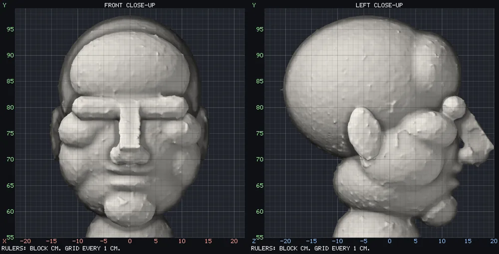
Primitives showing through: a bar for a nose, a visor for a brow, golf-ball eyes, apple cheeks.
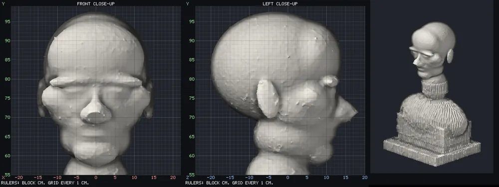
One face mass, two brow ridges, a cone nose with wings, a muzzle under it, lips, chin, jaw. Carved exactly to the form by detail and a protected rasp. Stylised, but a head.
Before and after: the bust, same camera
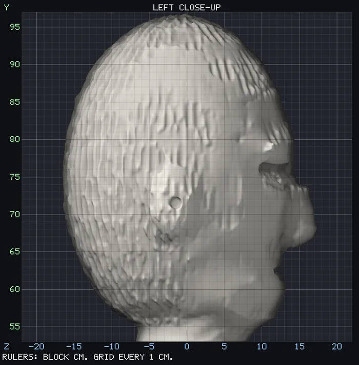
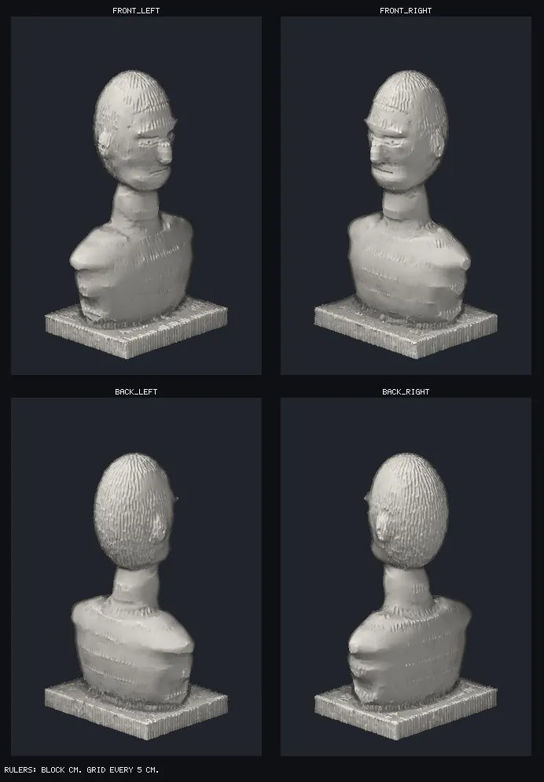
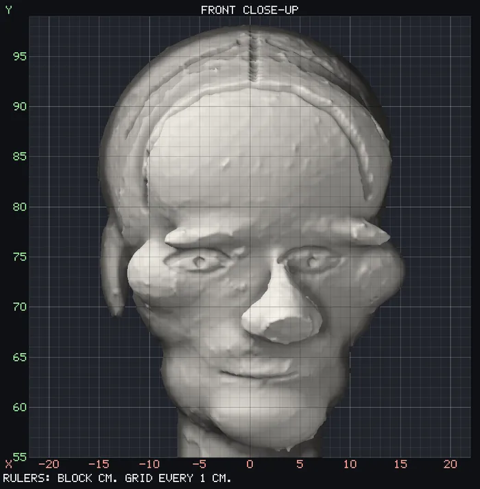
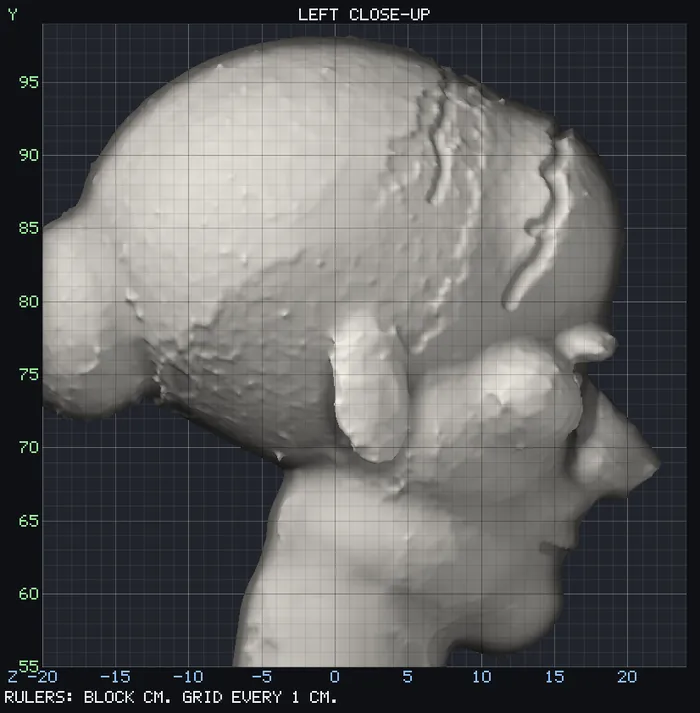
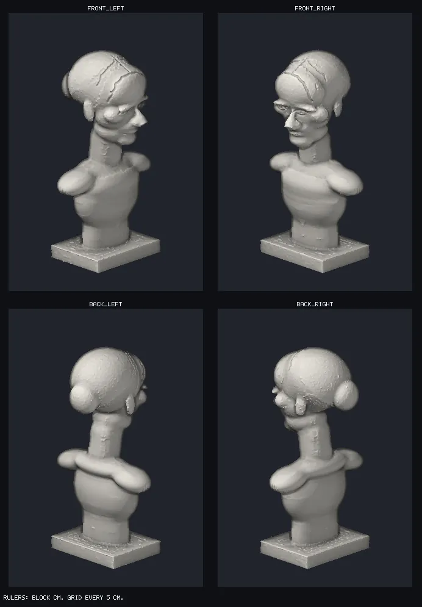
Verdict, by eye. Before: an egg with notches on a post. After: a face with a brow, deep eyes with lids and a drilled pupil each, a nose with a bridge and wings, a closed mouth with corners, a chin and a jaw; a hair mass with a parting and a bun; a head turned ten degrees. A stranger would call it a stylised portrait bust. It is not yet a bust an experienced carver would sign: the eyes are round and cartoon-like, the hair is a helmet, the neck is a long column, the shoulders are low and the chest tapers like a vase. The face is fixed; the composition is the weak part now.
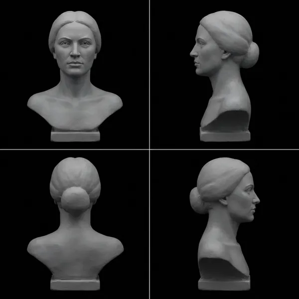
The brief now asks for a sculptor's study. Every new sheet came back as a classical bust with a hair mass, a slight turn and a low socle, and traced first time.
Detail mode: one feature, before and after, same window
Run S-bust-opus-formed-ref-skill-3-20261109203854-aff, the 22 cm window the sculptor focused on at turn 15 (centre X 0.5, Y 75, front view). Left: the stone after turn 14, as the canon and detail left it. Right: after turns 15 to 20 in detail mode: two roundel strokes per eye for the lids (1 to 1.2 cm wide, 0.4 to 0.5 cm deep), a 1 cm pupil drilled 0.5 cm into each, the mouth line cut at 0.8 cm with its corners drilled. 107 strikes in all.
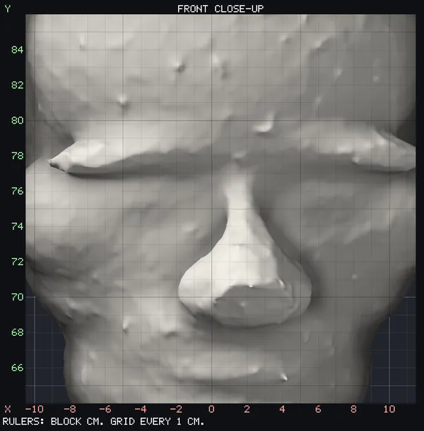
What is resolvable. The grid is 0.4 cm. In a 40 cm head an eye is about 5.5 cm wide (14 cells), a lid line 1 cm (2 to 3 cells), a pupil 1 cm. That is the floor: a 3 cm eye on a 22 cm head would be 7 cells and a lid line one cell, which the mesher shows as noise. The cheapest cure is composition, and the prompt now says so: a head of 38 to 42 cm in this block, not a finer grid. In detail mode a 16 cm window renders at about 48 px per cm, so a cell is 19 px across and the sculptor can see what it is doing; the centre-line relief numbers give it the depth the shading hides.
Model comparison on the final pipeline
One bust each, same prompt, same tools, reference on, Opus default caps ($8, 60 turns; Fable 5.1 capped at $4.50 for budget). Cost includes the reference sheet and the judge. The judge said "bust" for all of them, between 0.93 and 0.98, and is as lenient as before: ignore it and look.
| Run | Model | Turns | Passes | Strikes | Cost | Wall | Focus / detail calls | Read by eye |
|---|---|---|---|---|---|---|---|---|
| S-bust-opus-formed-ref-skill-4-20261109205403-2ff | Opus 5.5 | 40 | 70 | 25,381 | $1.89 | 11 min | 3 / 23 | Best face: lids, pupils, mouth with corners, nose, jaw. Torso a vase with low shoulders. |
| S-bust-fable52-formed-ref-skill-4-20261109205403-775 | Fable 5.2 | 25 | 100 | 33,367 | $4.48 | 15 min | 1 / 38 | Best composition: real shoulders and chest, head turned, hair in strands to a bun. Face cruder: round staring eyes, stubby nose, chisel marks left on the cheeks. |
| S-bust-fable-formed-ref-skill-4-20261109211127-6ea | Fable 5.1 | 32 | 76 | 21,251 | $3.36 | 9 min | 2 / 13 | A long-faced man with eyes, nostrils, mouth and ears that read, but a dented crown and a head on a post over a tall socle. |
| S-bust-sol-formed-ref-skill-4-20261109205403-6a5 | GPT-6 Sol | 60 | 34 | 19,527 | $0.64 | 8 min | 2 / 10 | Used all 60 turns, half of them looking. Brow, sockets and nose from the canon; hair a helmet, torso tiered like a lamp. |
| S-bust-gemini-formed-ref-skill-4-20261109205403-c87 | Gemini 3.1 Pro | 52 | 49 | 16,846 | $1.56 | 15 min | 2 / 12 | Worst: head placed low (centre Y 62) and wrapped in a hood of hair, features barely cut. |
| S-bust-fable52-plans-opus-formed-ref-skill-4-20261109211127-65f | Fable 5.2 plans, Opus 5.5 carves | 13 | 54 | 23,593 | $1.37 | 6 min | 0 / 32 | Not it: the planner's hair mass sat too far forward and swallowed the brow; the executor finished at turn 13 without detail mode. |
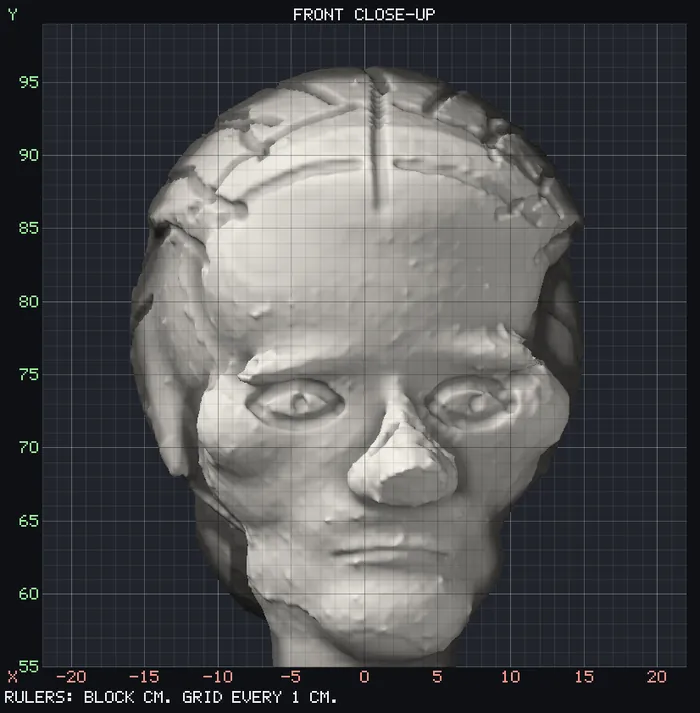
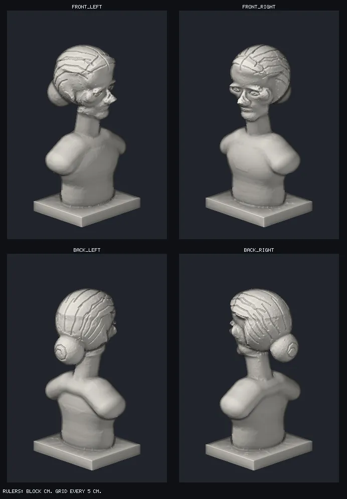
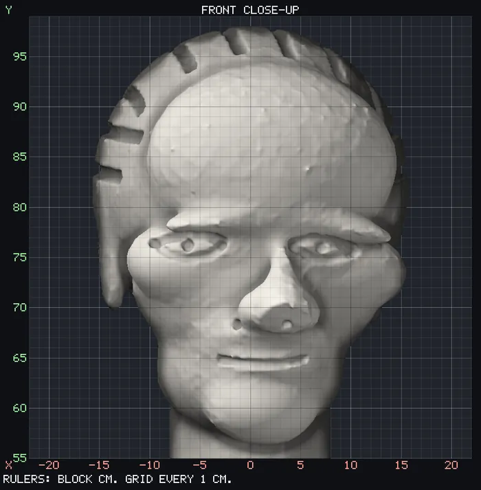
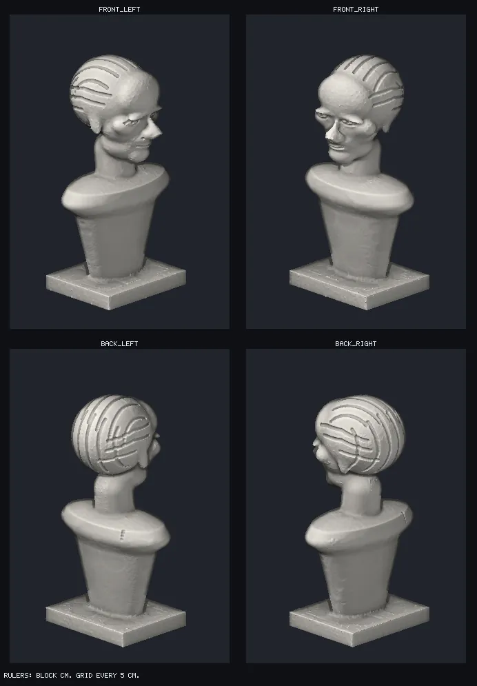
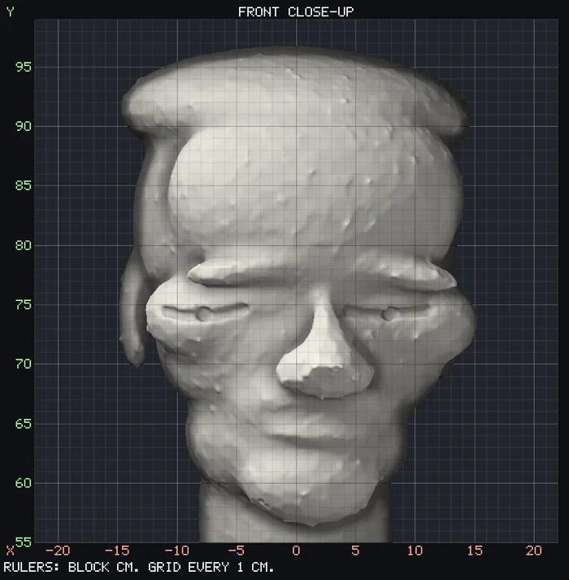
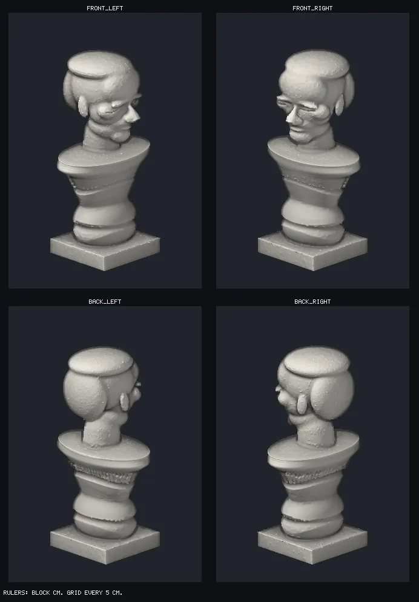
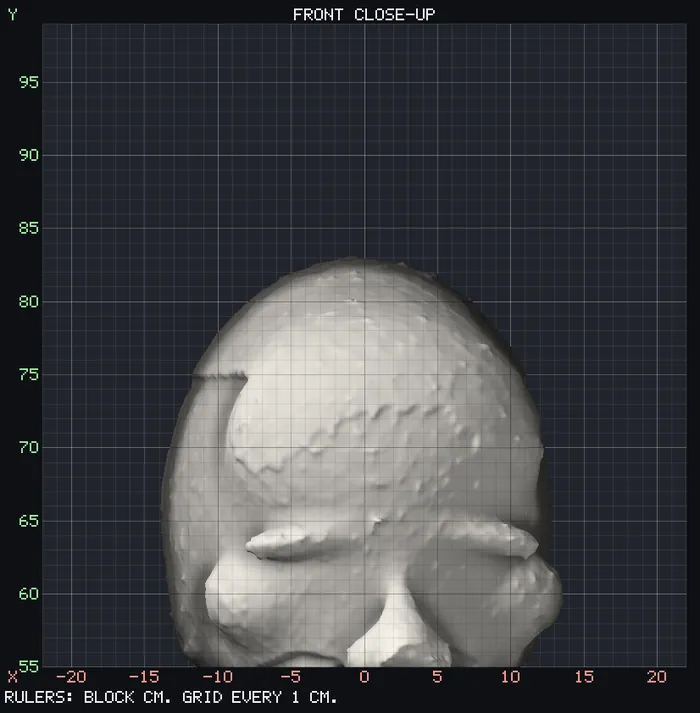
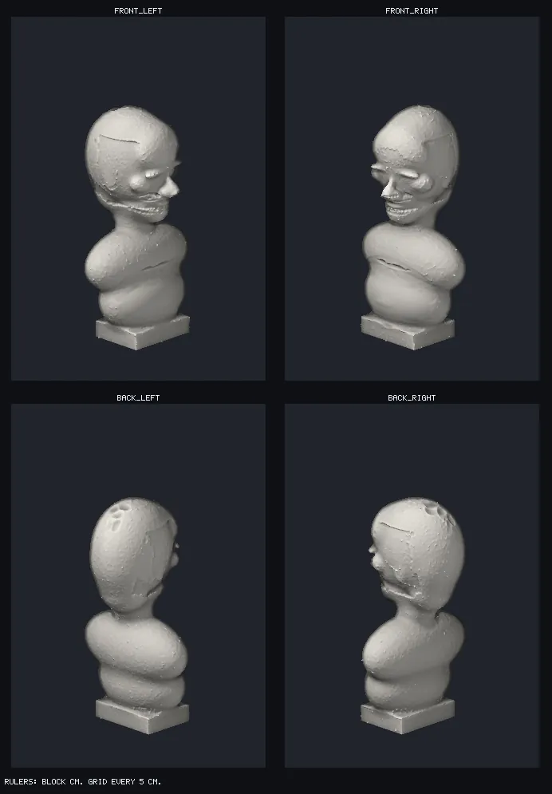
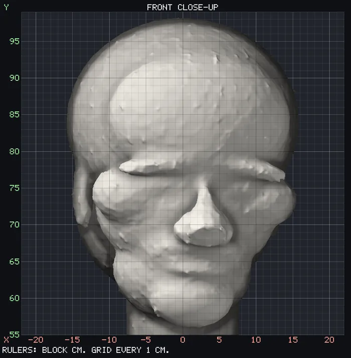
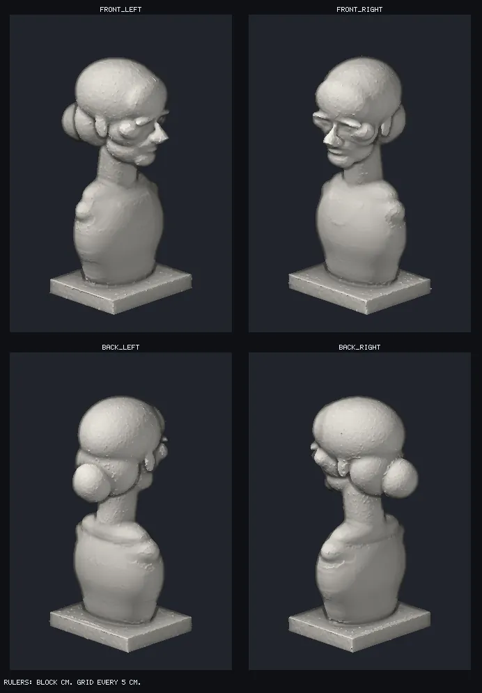
Ranking (face first, then the whole, then cost): Opus 5.5, Fable 5.2, Fable 5.1, GPT-6 Sol, Gemini 3.1 Pro. Fable 5.2 wins on composition and loses on the face at 2.4 times the price, so Opus 5.5 stays the default. One run each is one sample each: the Opus runs on this page vary as much between themselves (skill-1 to skill-4) as the models do between each other.
The runs that led here, and what did not work
| Run | What it tried | Turns | Cost | What happened |
|---|---|---|---|---|
| S-bust-opus-formed-ref-skill-1-20261109201733-66b | Canon head, detail, new reference brief. No detail mode yet. | 25 | $1.45 | First readable face (brow, sockets, nose, mouth line, parted hair). The model shrank the chest to a bulb under a tall socle: head on a post on a box. |
| S-bust-opus-formed-ref-skill-2-20261109202848-43f | Canon tweaks (deeper sockets, flatter ears), neck and shoulder rules in the prompt. | 29 | $1.41 | Lost the head. At turn 14 the model declared a separate "torso" form and cut to it; the pass protects one form, so the head went with the waste. It finished a 20 cm head on a 68 cm piece. This is why cutting to a second form is now refused. |
| S-bust-opus-formed-ref-skill-3-20261109203854-aff | The guard, detail mode (focus), relief numbers in close-ups. | 42 | $2.22 | Used detail mode three times: lids, pupils, mouth corners (the pair above). Torso again small on a 16 cm socle. |
| S-bust-opus-formed-ref-skill-4-20261109205403-2ff | The measure of a bust in centimetres in the prompt. | 40 | $1.89 | Socle gone, chest rises from the base, shoulders present. The "after" above. |
| S-pawn-opus-formed-ref-skill-4-20261109211127-032 | Regression check | 8 | $0.61 | Clean pawn, judge 0.96, finished in 8 turns. |
| S-cat-opus-formed-ref-skill-4-20261109211127-f0d | Regression check | 14 | $0.76 | A cat sitting up with ears intact and paws marked, better made than the study's cats; but upright rather than the loaf the commission asks for, and the judge said "sitting dog" (0.4). Not a regression in carving; a looser reading of the pose. |
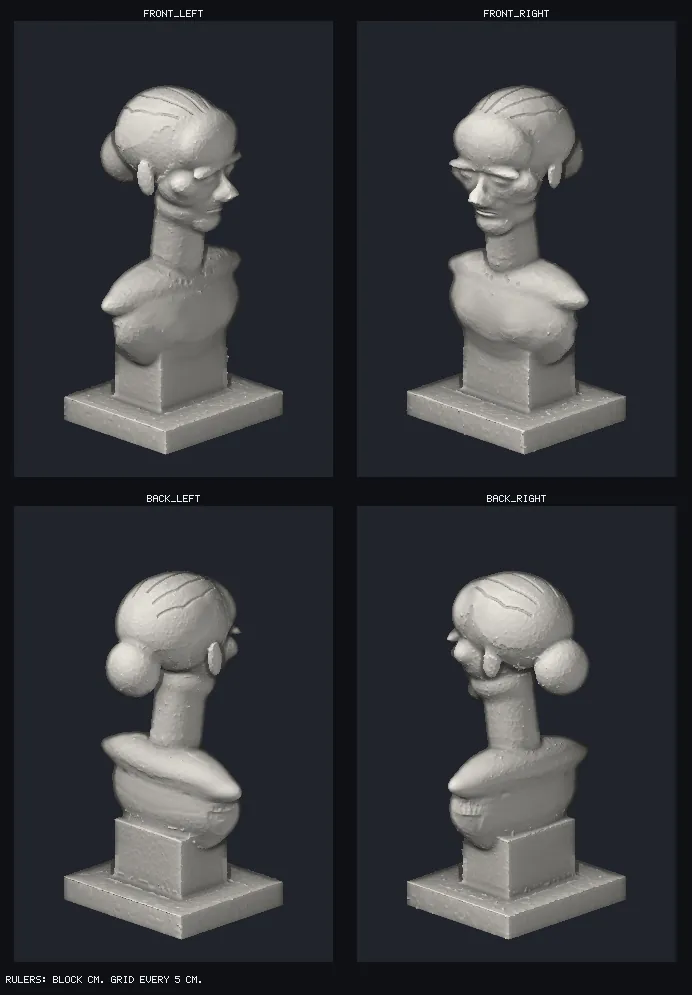
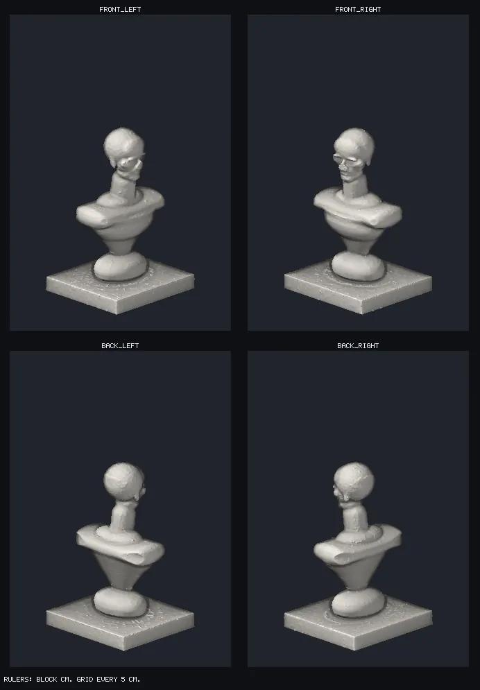
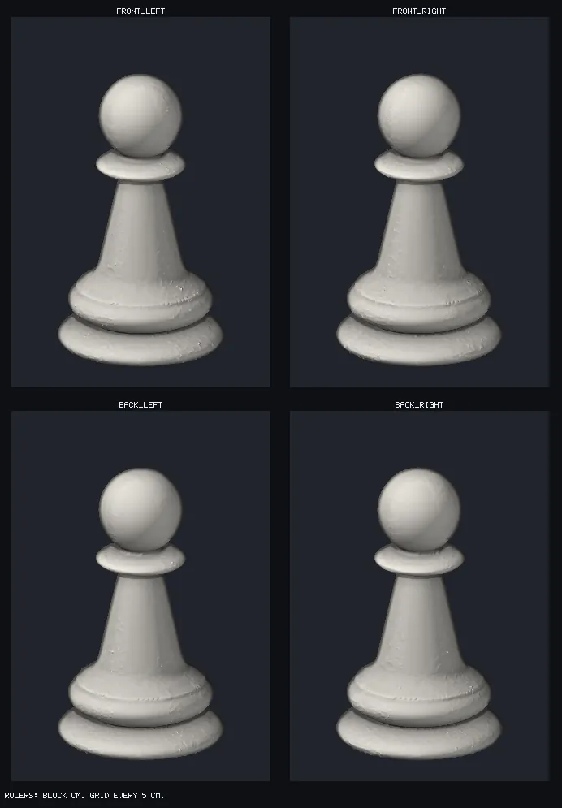
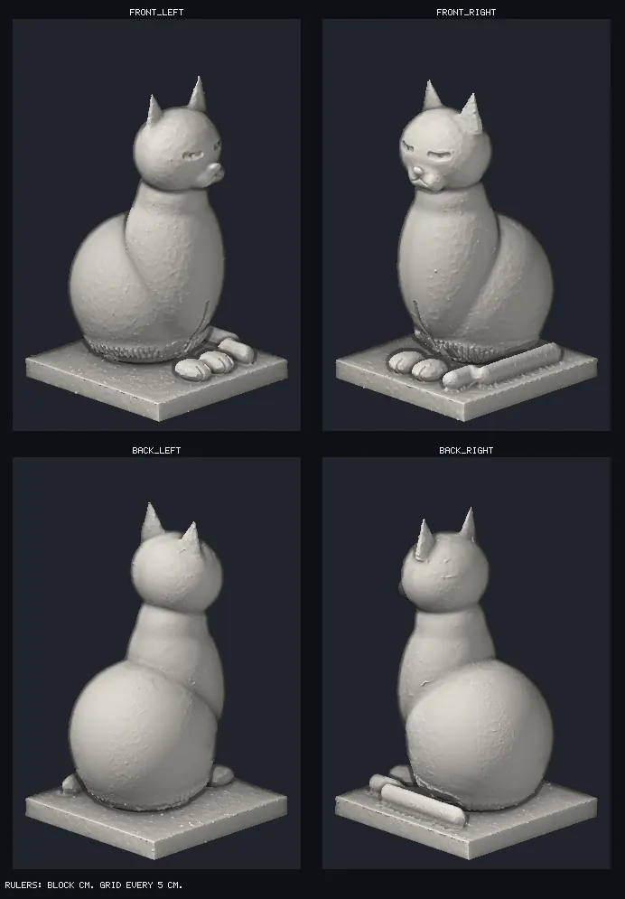
Did not work. The planner split (one run, above): a stronger planner did not make a better design, and the handoff lost the executor's appetite for detail work. Kyle's hypothesis that the references were the problem: the old sheets were fine as busts; the new brief gives better ones, but the bust improved because of the canon and the finishing pass, not the sheet. Fine chiselling of a face from a full look: still wrecks it, which is why detail mode confines strokes to a window and the prompt forbids strokes on a face outside it.
Spend
Eleven runs, $19.77 of the $25 cap (the study ledger went from $21.56 to $41.33). Busts: $1.45, $1.41, $2.22, $1.89 (Opus), $4.48 (Fable 5.2), $3.36 (Fable 5.1), $0.64 (Sol), $1.56 (Gemini), $1.37 (planner). Pawn $0.61, cat $0.76. Canon tuning cost nothing.
Still weak, and what to do next
- Composition is now the bottleneck: a long neck, low or missing shoulders, a chest that tapers to the base. The honest fix is a second canon, a
bust_torsosolid (neck, trapezius, shoulders, chest with the classical cut), placed and sized by the model the way the head is, so the design decision left to the model is proportion and pose, where it does well. - Every face is a sibling. The canon has no character knobs beyond its box and what the model lays over it. A few flat parameters on the head (jaw width, nose length, brow weight, age) or two or three canon variants would give variety without giving the model back the job of placing sockets.
- Eyes. The canon's eye is an almond set back under the brow; the model then drills a round pupil, which reads as cartoon. A lid groove and an iris disc in the canon, carved by
detail, would read better than anything cut by hand at this resolution. - Hair is an ellipsoid helmet. A
haircanon (cap, temples, nape, optional bun or parting) is the same trick as the head. - Detail mode is not persisted: focus lives in the Studio, so a reload or a context rebuild drops it. Harmless today; it should ride in the session if the region loop ever runs in a parallel worker.
- Sampling. Every verdict here rests on one run per arm. Three busts per model on the final pipeline (about $25 more) would say whether Fable 5.2's composition and Opus's face are real differences or luck.